5.2. Validating with JOSM
Course Objectives
This section provides:
- An overview of Validation in JOSM, including presentation slides
- Step-by-step instructions for practicing validation in JOSM
Learning Activities
Overview of Validation
Validation is a process of checking the data quality (in this case, map data quality) for accuracy, consistency, completeness and anomaly. Validation is important to maintain the quality of OSM data. There are lots of aspects that we need to consider during validation, namely accuracy, consistency, completeness, and anomaly detection.

When checking for accuracy, you need to make sure that the map data is aligned with the imagery and is correct in terms of geometry.
For consistency, make sure that all mapped objects are consistent in shape. For example, when you found a residential area, make sure all the buildings are consistently traced and orthogonalized.

For completeness, it depends on what information you want to collect when mapping and what mapping method is used. Information collected using remote mapping method would be different with the information collected by conducting field survey. Information collected using remote mapping method will be very limited since you only have satellite imagery and gpx tracks available as reference.
For anomaly, make sure there is no abnormal looking mapped objects. This can be acquired by checking the OSM data with visual checks and compare with your preferred imagery.
While light validation can be completed using iD Editor, HOT recommends that detailed validation be completed using JOSM.
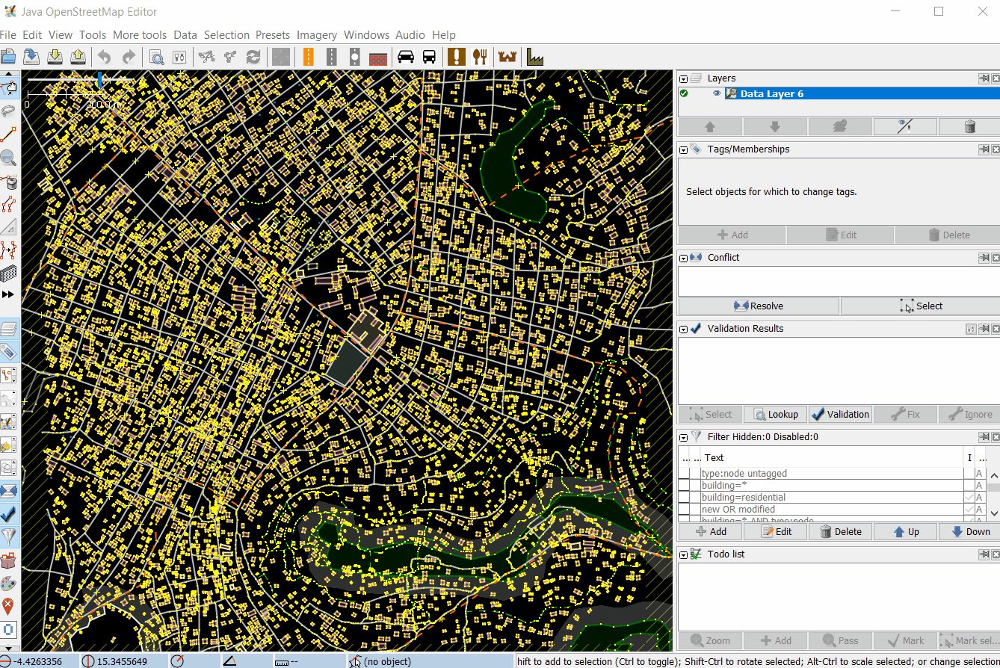
Practice Validation
The following activity covers the process of validating bad OSM data in JOSM. This activity uses an example file that can be downloaded here [2].
Skills and Technology Needed
- Computer
- Internet connection (for data download)
- OSM account
- JOSM
- Example .osm file
Estimated time for completion: 1 hour
Objectives:
- To be able to understand validation process for OSM data
- To be able to perform validation using Validation Tools on JOSM
- To be able to fix commonly error, warning and mistake found during validation
1. Opening OSM Data
After successfully downloaded sample data, open file validation_sample.osm into your JOSM by following these steps:
- Click menu File ➝ Open

- Go to your directory where you save validation_sample.osm. Select the file validation_sample.osm and then click Open.
.png)
- After opening the exercise file, your JOSM will look like this:

2. Using JOSM Validation Tools
JOSM provides a built-in validator that checks and fixes invalid map data called Validation Tools. After checking for accuracy, consistency, completeness and anomaly, run this validation tools so that the map data is perfectly valid. To get started with the Validation tools, you need to activate the Validation Results Windows by following these steps:
- Click menu Windows ➝ Validation Results
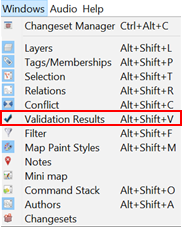
- Validation results Windows will appear on the left side of your JOSM
.png)
After activating the Validation Results Windows, now you can start validation using JOSM Validation Tools. Download OSM data first using either Slippy Map or Tasking Mananger, then you can click the Validation button in the Validation Results Windows. Let’s use OSM data sample for exercise.
- To run validation on all the data in the current data layer, which is validation_sample.osm, make sure that there is no data selected. Then, click **Validation **button in the Validation Results Windows. Once the validation process is finished, Validation Results Windows will be filled with listed errors and warnings. The amount of errors and warnings found depends on the quality of the data. For example, on this OSM data sample, you will find one error and twenty one warnings.
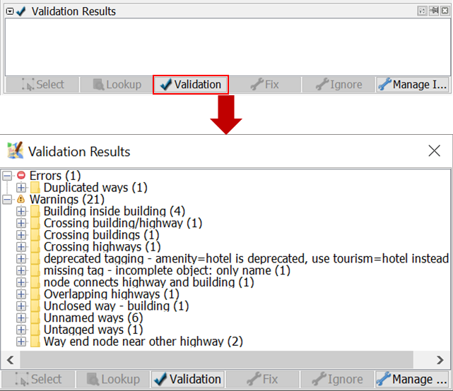
- A new layer called Validation errors will also be added to the Layers Windows. This layer will highlight the errors and warnings found - red highlight for errors and yellow highlight for warnings.
.png)
3. Fixing Errors and Warnings
Errors are important to fix. Do not ignore errors. If you have errors on your OSM data, you won’t be able to upload it into OSM Server until you fix the errors. Some errors can be fixed automatically using the Fix button on Validation Results Windows.
Warnings are problems that are important to fix, but in some cases, such as “Unnamed Ways”, they are tolerable. Mostly, warning should be fixed manually. Now, let’s try to fix errors and warnings found on validation_sample.osm. There are one error and twenty one warnings found on validation_sample.osm. They are:
- Error: Duplicated ways (1)
- Warning: Building inside building (4)
- Warning: Crossing building/highway (1)
- Warning: Crossing buildings (1)
- Warning: Crossing highways (1)
- Warning: deprecated tagging - amenity=hotel is deprecated, use tourism=hotel instead (1)
- Warning: missing tag - incomplete object: only name (1)
- Warning: node connects highway and building (1)
- Warning: Overlapping highways (1)
- Warning: Unclosed way - building (1)
- Warning: Unnamed ways (6)
- Warning: Untagged ways (1)
- Warning: Way end node near other highway (2)
Now, let’s fix all the errors and warnings one by one.
3.1 Fixing Error: Duplicated ways
Duplicated ways error come up when there are ways that duplicate. This is usually caused by unstable internet connection when uploading OSM data into OSM server. Initially, to fix errors or warning, you should select the error or warning you want to fix. Go to the Duplicated ways error in the Validation Result Windows, click the + icon so that it looks like the picture below.

Select the objects where it is duplicated and Right-click ➝ Zoom to problem to zoom and see the duplicated objects. Your map canvas will zoom in to the duplicated objects. Fortunately, duplicated ways can be automatically fixed. After selecting the duplicated objects, click Fix. Voila, your error is fixed!
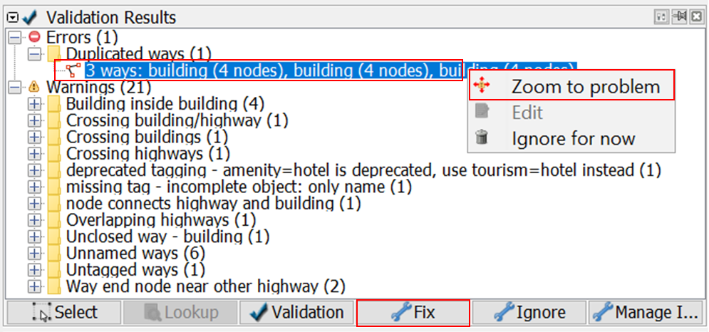
3.2 Fixing Warning: Building inside building
Building inside building warning come up when there is a building object inside another building object. To fix it, go to the building inside building warning in the Validation Results Windows, click the + icon so that it looks like the picture below.
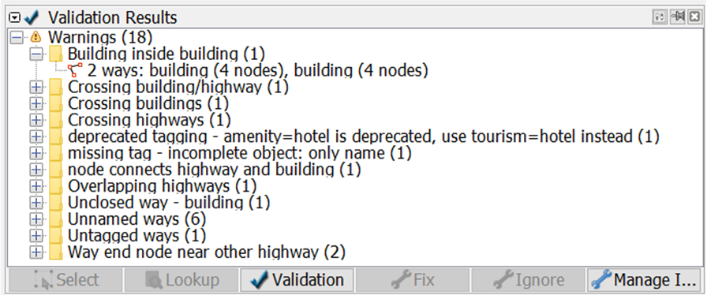
Select the objects listed under the warning Building inside building and Right-click ➝ Zoom to problem to zoom and see the objects. Your map canvas will zoom in to the objects.
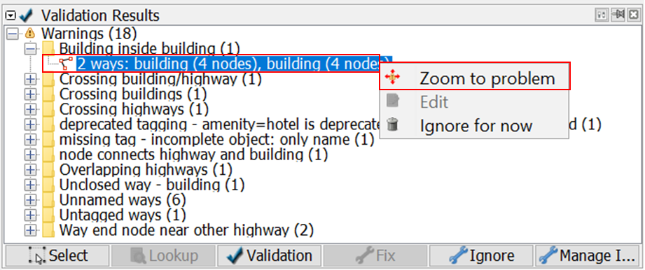
Most of warning should be fixed manually. To fix building inside building, simply delete one of the buildings. To decide which one to be deleted, please take a look at the imagery and carefully decide which one to be deleted. Voila, you just fixed a building inside building.

3.3 Fixing Warning: Crossing building/highway
Crossing building/highway come up when there is a building crossing with highway. To fix it, go to the crossing building/highway warning in the Validation Results Windows, click the + icon so that it looks like the picture below.
.png)
Select the objects listed under the warning Crossing building/highway and Right-click ➝ Zoom to problem to zoom and see the objects. Your map canvas will zoom in to the objects.
.png)
To fix crossing building/highway, simply move one of the crossed objects, either the building or the segment/node of the highway. To decide which object that should be moved, please take a look at the imagery.
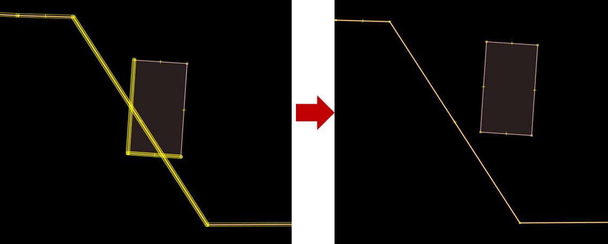
3.4 Fixing Warning: Crossing buildings
Crossing buildings warning come up when there are two or more buildings overlapped with each other. To fix it, go to the crossing buildings warning in the Validation Results Windows, click the + icon so that it looks like the picture below.
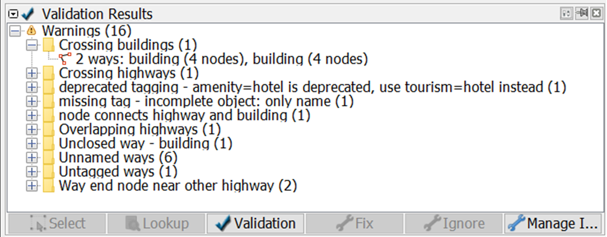
Select the objects listed under the warning Crossing buildings and Right-click ➝ Zoom to problem to zoom and see the objects. Your map canvas will zoom in to the objects.
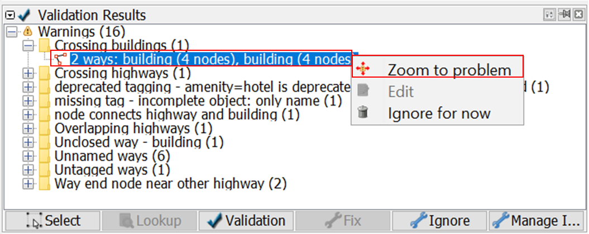
To fix crossing buildings, simply move one of the overlapped buildings so that they wont be overlapping anymore. To decide which buildings that should be moved, please take a look at the imagery.

3.5 Fixing Warning: Crossing highways
Crossing highways warning come up when there are highways that cross each other with no crossing node. To fix it, go to the crossing highways warning in the Validation Results Windows, click the + icon so that it looks like the picture below.
.png)
Select the objects listed under the warning Crossing highways and Right-click ➝ Zoom to problem to zoom and see the objects. Your map canvas will zoom in to the objects.
.png)
To fix crossing highways, simply add a crossing node in the highway intersection. To add node at intersection, you can use JOSM additional tools, but first you have to activate plugin utilsplugins2. You can go to menu Preferences➝ Plugins, search for **utilsplugins2 **and give a check for utilsplugin2.
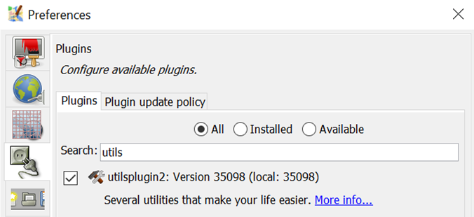
To add node at intersection, select the two crossing highways, and go to menu More tools ➝ Add nodes at intersections. And voila, your crossing highways now have a crossing node.

3.6 Fixing Warning: deprecated tagging
Deprecated tagging warning come up when there is an object or more in your OSM data that used deprecated tagging. To fix it, go to the deprecated tagging warning in the Validation Results Windows, click the + icon so that it looks like the picture below.
.png)
Select the objects listed under the warning deprecated tagging and Right-click ➝ Zoom to problem to zoom and see the objects. Your map canvas will zoom in to the objects.
.png)
Fortunately, deprecated tagging can be fixed automatically using Fix button. After selecting the object that has deprecated tagging, press the Fix button. JOSM will automatically change the deprecated tag into the new one.
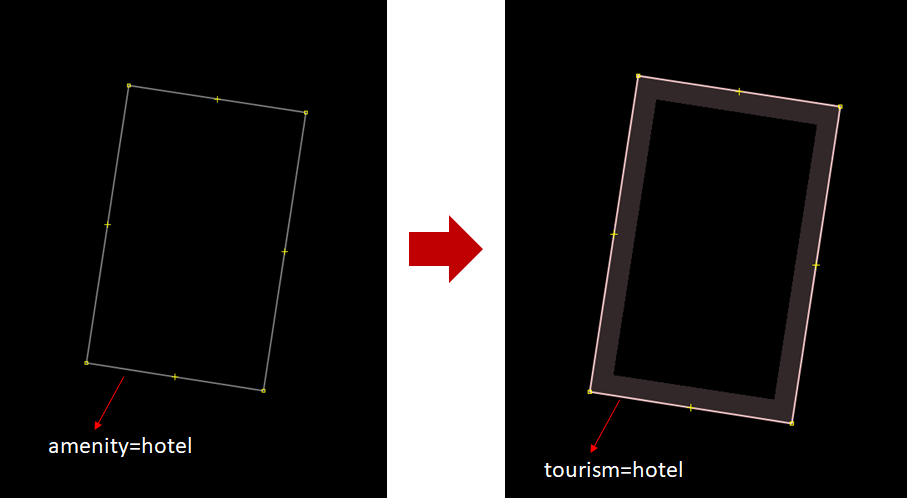
3.7 Fixing Warning: missing tag
Missing tag warning come up when there is one or more objects that have no tag or the tag is incomplete. To fix it, go to the missing tag warning in the Validation Results Windows, click the + icon so that it looks like the picture below.
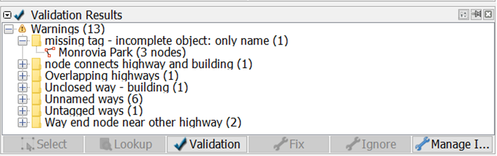
Select the objects listed under the warning missing tag and Right-click ➝ Zoom to problem to zoom and see the objects. Your map canvas will zoom in to the objects.
.png)
In this case, the object “Monrovia Park” only has tag name. It does not have the tag that identify it as park. What you have to do is simply add a tag to define that it is a park, named Monrovia Park. To add tag, click menu Presets ➝ Search preset… and search for Park. Select one that suits the kind of park you map, in this case you can select Geography/Landuse/Park, then click Select. Leave the name as is, then click Apply Preset.

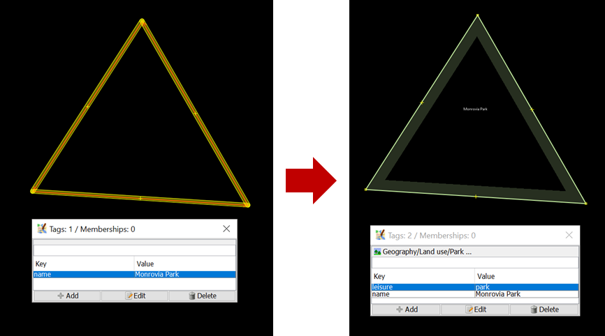
3.8 Fixing Warning: node connects highway and building
Node connects highway and building warning come up when there is a building node connects with highway. To fix it, go to the node connects highway and building warning in the Validation Results Windows, click the + icon so that it looks like the picture below.
.png)
Select the objects listed under the warning node connects highway and building and Right-click ➝ Zoom to problem to zoom and see the objects. Your map canvas will zoom in to the objects.
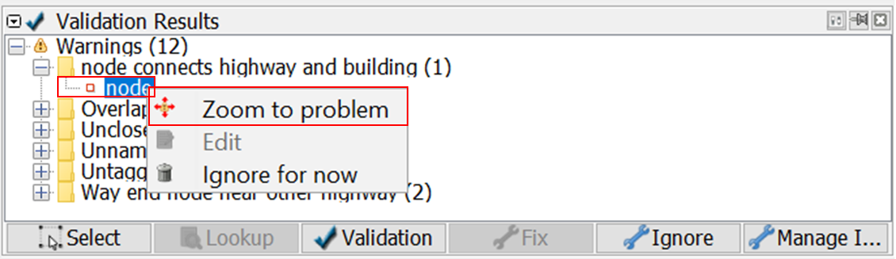
To fix this, simply separate the connected nodes by selecting the connected nodes first then click menu Tools ➝ Unglue Ways or press G on keyboard for shortcut. After separating the connected nodes, keep in mind to move either the whole building or the highway’s node since both nodes are still overlapping.

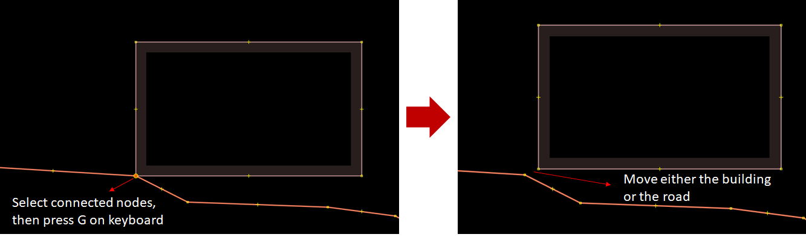
3.9 Fixing Warning: Overlapping highways
Overlapping highways come up when there are highways overlapping each other. To fix it, go to the overlapping highways warning in the Validation Results Windows, click the + icon so that it looks like the picture below.
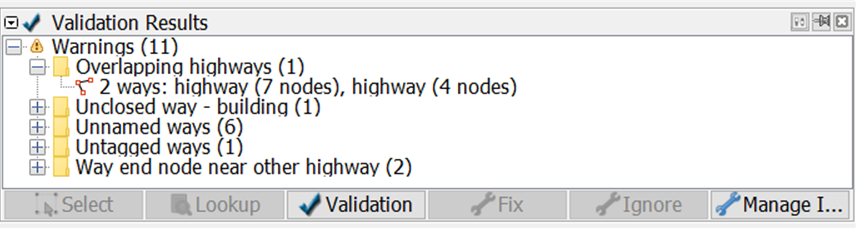
Select the objects listed under the warning overlapping highways and Right-click ➝ Zoom to problem to zoom and see the objects. Your map canvas will zoom in to the objects.
.png)
To fix this warning, firstly you should split the overlapped segment of the highway. Select one end node where the highways are overlapped, then click menu Tools ➝ Split way or press P on keyboard for shortcut. Selet the other end node where the highways are overlapped, and then menu Tools ➝ Split way or press P on keyboard again. Now the overlapped segment have splitted. All you have to do now is to delete the overlapped segment by selecting the segment and then press delete on your keyboard.

3.10 Fixing Warning: Unclosed way - building
Unclosed way - building warning come up when there is one or more buildings drawn as unclosed polygon. This happens when you draw building manually using node tools without building tools and the first node and the last node are not merged. To fix it, go to the unclosed way - building warning in the Validation Results Windows, click the + icon so that it looks like the picture below.
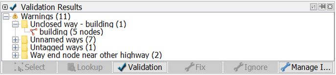
Select the objects listed under the warning unclosed way - building and Right-click ➝ Zoom to problem to zoom and see the objects. Your map canvas will zoom in to the objects.
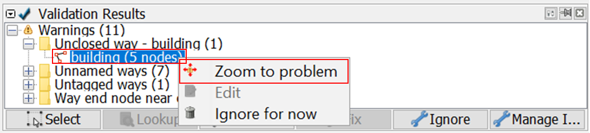
To fix this, select the first node and the last node of the building and merge it by clicking menu Tools ➝ Merge Nodes or pressing M on keyboard. And voila, now your building is a closed polygon.
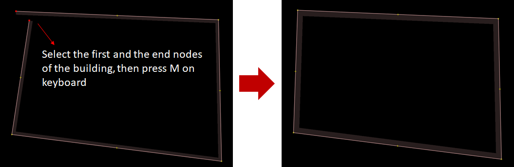
3.11 Fixing Warning: Unnamed ways
Unnamed ways warning come up when there is one or more highways (main road) that do not have names. This warning is one of the tolerable warning, so you can just ignore this. If you know the name of the road, you can add the road’s name by adding tag name to the road. However, if you do not know the name, please just leave it as is rather than giving a random name that could be misleading. To ignore this warning, you can just leave it as is or you can also put it on your Ignore list so that this warning does not come up when you perform validation in the future. Click the “Unnamed Ways” warning in the warning list, then click Ignore and click Whole Group.
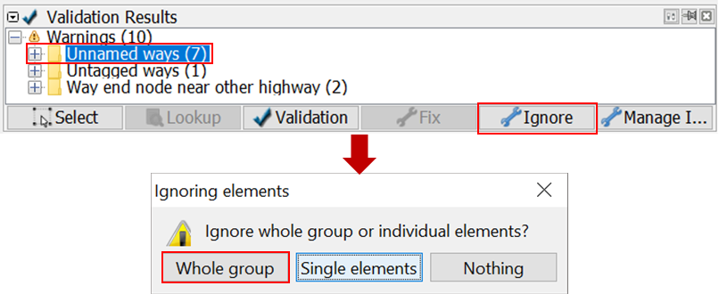
You can always put it back to your warning list if you change your mind, so that this warning will come up again when you perform validation by clicking Manage Ignore, then right-click on the warning you want to put back and choose Don’t Ignore.
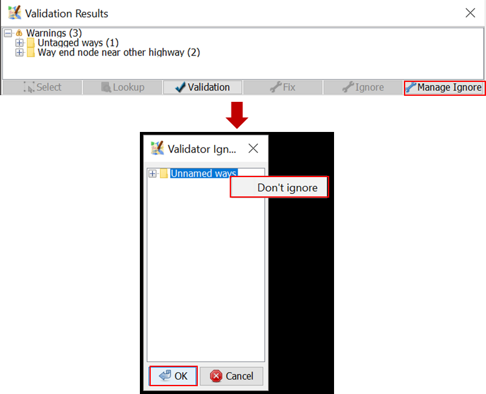
3.12 Fixing Warning: Untagged ways
Untagged ways warning come up when there is untagged object. To fix it, go to the untagged ways warning in the Validation Results Windows, click the + icon so that it looks like the picture below.
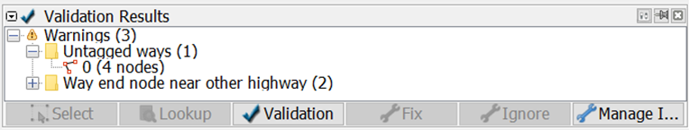
Select the objects listed under the warning untagged ways and Right-click ➝ Zoom to problem to zoom and see the objects. Your map canvas will zoom in to the objects.
.png)
To fix it, just simply add tag/preset to the object. Please take a look at the imagery to decide what tag to add to the object. Select the object and then go to menu Preset and select the tag that suits the object. For example, if this object turns out to be hospital, add tag/preset hospital.
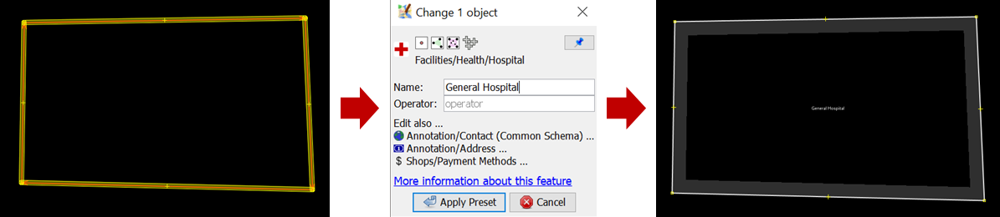
3.13 Fixing Warning: Way end node near other highway
To fix way end node near other highway, go to the way end node near other highway in the Validation Results Windows, click the + icon so that it looks like the picture below.
.png)
Select the objects listed under the warning untagged ways and Right-click ➝ Zoom to problem to zoom and see the objects. Your map canvas will zoom in to the objects.
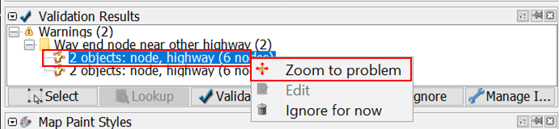
To fix it, select the end node and then activate Draw mode by pressing A on keyboard. Then, draw the road so that it is connected to the road nearby.
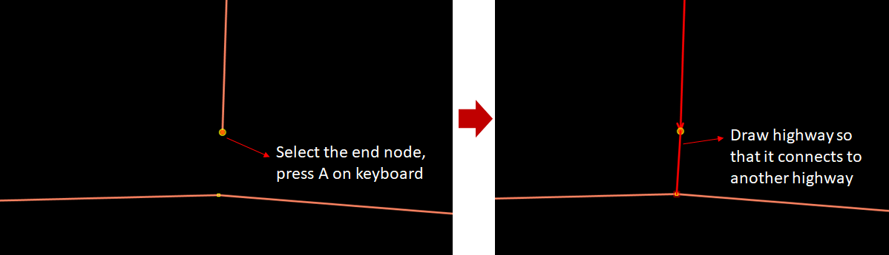
[Quiz] Check Your Knowledge
Type of quiz: multiple choice
-
What is the function of the Validation Tool in JOSM?
a. Automatically checking the number of objects
b. Checking the completeness of attribute data in OSM
c. Checking the OSM data quality by showing errors and warnings
d. Manually checking the accuracy of objects
Type of quiz: choose the right word
[2] are important to fix. You should not [3] it. If you can not fix it, then you will not be able to upload it into the OSM Server. Whereas you can ignore [4] depending on its type. Both types give you information that there are some things that need to be [5] in your data.
[a] Errors [b] Ignore [c]Warnings [d] Repaired
Type of quiz: Multiple choice
Review the error and warnings and its corresponding solution. Identify which of the issues the passage is referring to:
-
This warning is the most commonly found warning during validation. Most OpenStreetMap users digitize two buildings too closely to the point that they might be sharing a line or even overlapping with each other. To fix this warning, you just need to move or delete one of the overlapping buildings.
a. Building Duplicated Nodes
b. Unnamed ways
c. Crossing Building
-
This warning comes up when there are two lines or highway objects overlapping without an intersection node between those lines or highway. To fix this warning, you just need to add an intersection node between those lines/highway.
a. Crossing Ways
b. Unnamed ways
c. Crossing Building
-
It shows that there is a way or road without a name on it. If you know the name of the street, then you have to update it. However, for most cases, you can just ignore this warning if you do not know the place. Most mappers who do their mapping remotely do not usually have local knowledge to know the names of the roads.
a. Building Duplicated Nodes
b. Unnamed ways
c. Crossing Building
Answer: 1. C | 2. A | 3. B | 4. C | 5. D | 6. C | 7. A | 8. B
Activity Checklist
By the end of this section, you should be able to:
- Understand how to validate OSM data using JOSM
- Understand what errors and warnings are
- Understand how to fix the errors
- Understand how to repair and ignore the warnings
Additional resources
Training presentation